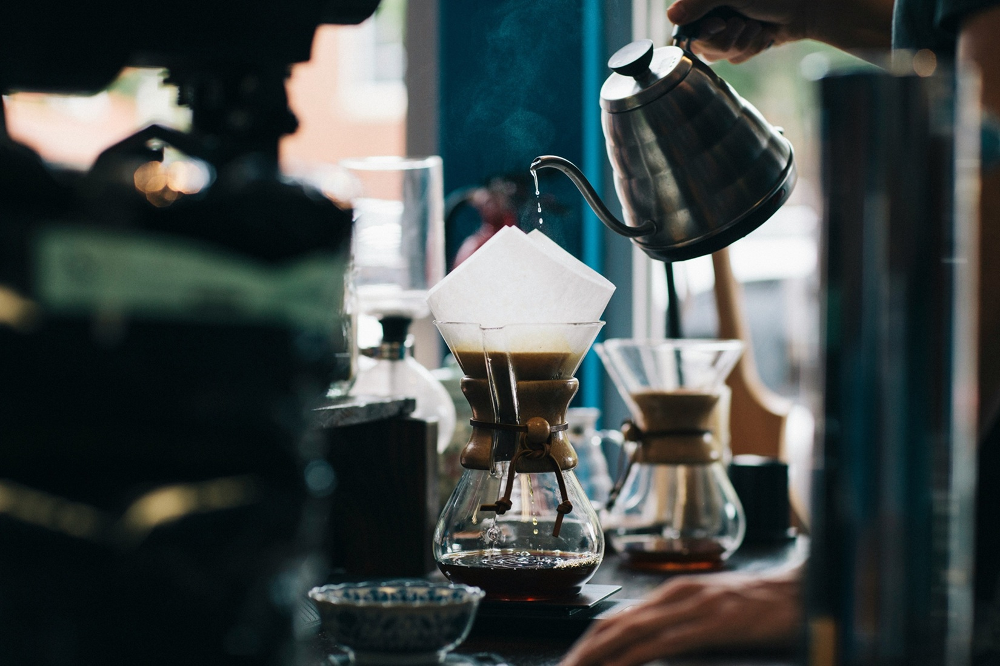
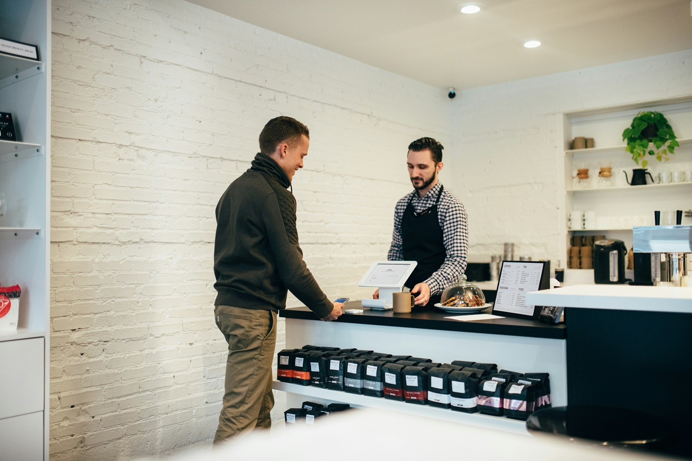
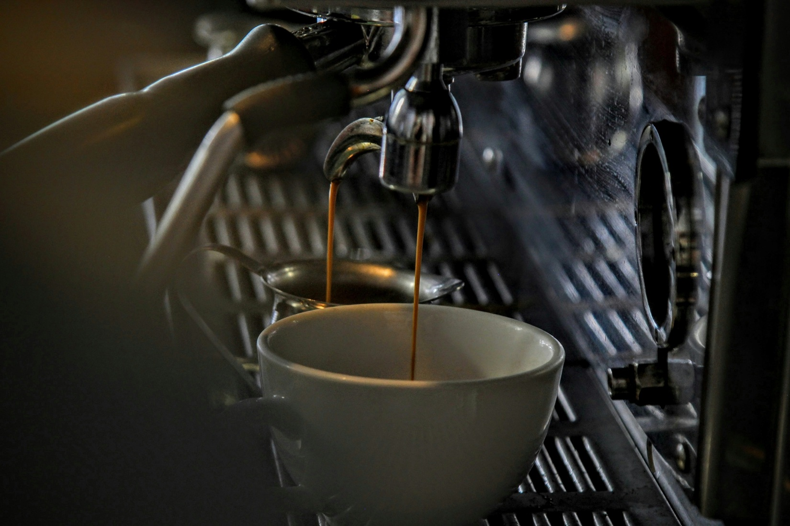

About Bean & Brew
Our Story
Bean & Brew started as a small family business in the heart of town. Passionate about coffee and community, we grew from a humble café serving just a few local favourites to a modern, cozy spot where friends and colleagues can gather. While we’ve expanded, our focus remains the same: providing an inviting space with excellent coffee and warm hospitality.
Coffee & Products
We pride ourselves on sourcing the finest beans from Brazil, focusing on small farms that practice sustainable and ethical cultivation. Each cup you enjoy is crafted from carefully selected beans, roasted to perfection, and brewed with love. From classic espresso to seasonal specialties, our menu showcases the richness of Brazilian coffee and the artistry behind every pour.
Our Mission & Values
At Bean & Brew, our mission is simple: to create a welcoming space where coffee brings people together. We value quality, sustainability, and authenticity, and we strive to make every visit a moment of comfort, connection, and inspiration.
Gallery

